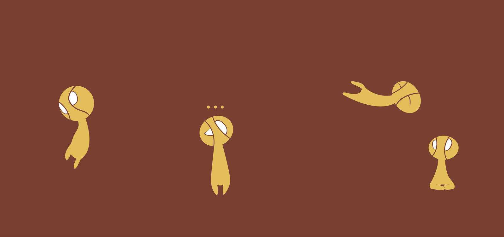

Bardo, El Guardián Trotamundos
El Bardo es un viajero de un reino más allá de las estrellas y un agente de la serendipia quien lucha por
conservar el balance donde sea que la vida resista la indiferencia del caos. Muchas canciones de Runaterra
hablan sobre su extraordinaria naturaleza y todas ellas dicen que los artefactos de un inmenso poder mágico
atraen al vagabundo cósmico. Rodeado por un alegre coro de espíritus de meeps, es imposible pensar que sus
acciones son malévolas, ya que el Bardo siempre busca servir al bien de todos... a su extraña manera.

Bardo atrae espíritus menores que lo ayudarán en sus ataques básicos para infligir daño mágico adicional.
Cuando Bardo haya recolectado suficientes Campanillas, sus meeps también infligirán daño en un área y
ralentizarán a los enemigos que impacten.
